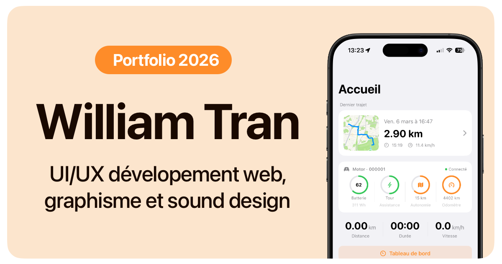
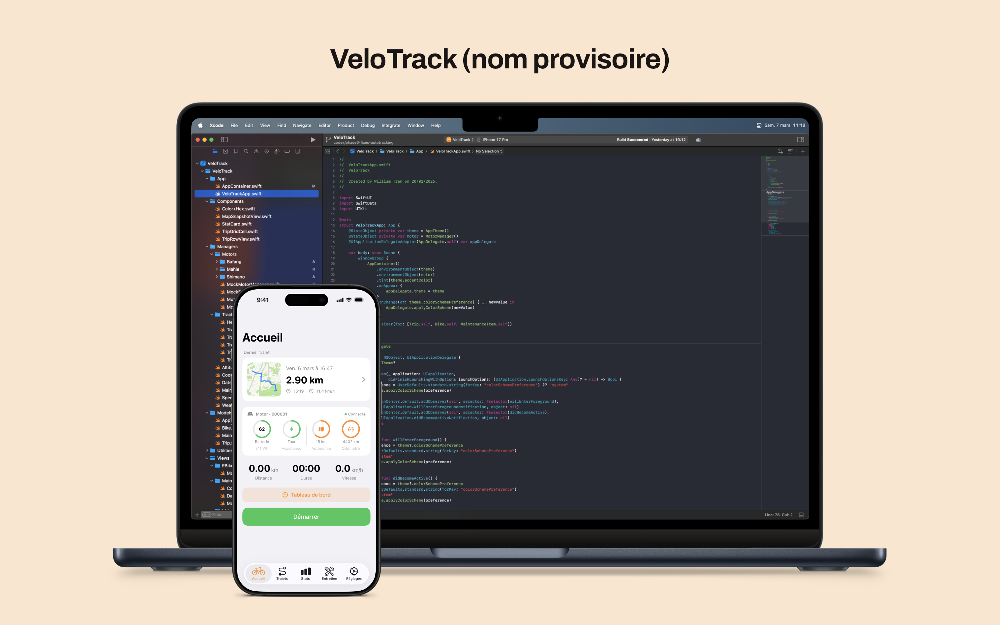
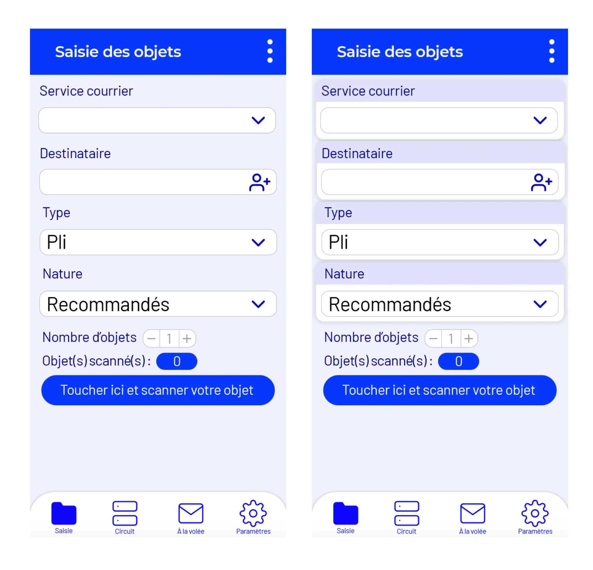

William Tran
Designer UI/UX avec profil front-end. Je conçois des interfaces utiles, pensées pour un usage réel, avec une attention forte à la hiérarchie, au rythme et à la qualité d'exécution.
Positionnement
Mon approche relie conception d'interface, cohérence visuelle et réalisation concrète. Je travaille sur des produits où lisibilité, utilité et finition comptent autant que l'idée de départ.
Le front-end fait partie de ma pratique pour vérifier les choix de design dans l'expérience réelle. Mon parcours dans le son nourrit aussi mon attention au rythme et à la précision.
Compétences clés

Ce document
- Version courte pensée pour une lecture rapide en candidature
- Trois projets représentatifs de mon profil
- Le site complète ce PDF avec davantage de détails
Projets sélectionnés
- VeloTrack, application iOS de suivi cycliste
- Guide studio mobile first
- Refonte Suivea
VeloTrack
Application iOS native conçue pour lancer automatiquement le tracking vélo, centraliser les données de sortie et intégrer certains eBikes en Bluetooth Low Energy.
Concevoir une expérience capable de démarrer un trajet sans friction, sans faux positifs et sans action manuelle.
Enjeu
Les applications vélo classiques imposent souvent une manipulation avant chaque sortie. Le projet part d'un besoin simple : enfourcher le vélo et laisser l'application gérer le reste de manière fiable.

Ce que j'ai conçu
- Tracking intelligent avec démarrage et arrêt automatiques
- Filtrage GPS pour limiter le bruit et les sauts
- Statistiques et gestion de maintenance
- Architecture BLE extensible pour l'eBike
Points forts
- Fusion CoreLocation/CoreMotion pour détecter le bon contexte
- Reverse engineering du protocole Mahle sans documentation exploitable
- Interface simple malgré une logique interne complexe
Guide studio mobile first
Une web app très courte pensée pour répondre en quelques secondes aux besoins concrets des artistes et invités sur place.
1 scan, toutes les infos évidentes, zéro question inutile à l'équipe.
Problème
Sur place, les mêmes questions reviennent vite : Wi-Fi, livraison, restaurants, infos pratiques. L'objectif était de rendre ces réponses autonomes dans une interface très rapide à comprendre sur téléphone.

Réponse design
- Hiérarchie de contenu calée sur l'ordre d'usage réel
- Premier écran dédié au Wi-Fi invité avec copie immédiate du mot de passe
- Structure courte, lisible et orientée action
- Interface sans éléments décoratifs ni détours inutiles
Valeur ajoutée
- Réduction des demandes répétitives adressées à l'équipe studio
- Expérience pensée pour un contexte réel, pas pour une simple vitrine
- Tri client des restaurants selon l'heure pour proposer les options les plus pertinentes
Refonte Suivea
Travail conjoint sur l'identité visuelle et les maquettes mobiles pour clarifier l'interface, renforcer la cohérence du produit et préparer une intégration front-end plus propre.
Moderniser l'existant sans casser les repères d'usage d'un outil métier déjà installé.


Contexte
Suivea est un outil de traçabilité utilisé dans un environnement métier et terrain. La mission consistait à corriger une interface dense et une identité visuelle vieillissante, tout en conservant les repères utiles aux utilisateurs.
Travail réalisé
- Refonte du logo avec plusieurs itérations pour gagner en lisibilité et stabilité
- Reprise des maquettes mobiles pour clarifier la hiérarchie visuelle
- Réorganisation des écrans de saisie et de distribution
- Uniformisation des composants, des espacements et de la navigation
Résultat recherché
- Rendre les écrans plus clairs en usage rapide
- Créer une cohérence entre identité visuelle et interface produit
- Produire des maquettes suffisamment précises pour l'intégration
Le site complète ce PDF
Cette version a été pensée pour une lecture rapide en candidature. Le portfolio en ligne contient davantage de projets, de détails sur les process, ainsi que des contenus qui se prêtent moins bien au format PDF, comme les parcours complets, les visuels supplémentaires, l'audio ou la vidéo.
Autres expériences
- Montage et mixage son en freelance sur podcasts, animation et formats audiovisuels
- Conception d'une plateforme web de dépôt de livrables audio en contexte studio
- Expériences de terrain ayant renforcé rigueur, pédagogie et clarté d'exécution
Langues
- Français courant
- Anglais C1
- Espagnol B1
Outils & environnements
- Figma
- Notion
- GitHub
- Xcode
En bref
- Profil UI/UX avec capacité d’intégration front-end et attention forte portée à la finition
- Travail sur des produits, interfaces, identité visuelle et projets audiovisuels
- Version détaillée disponible sur le portfolio en ligne